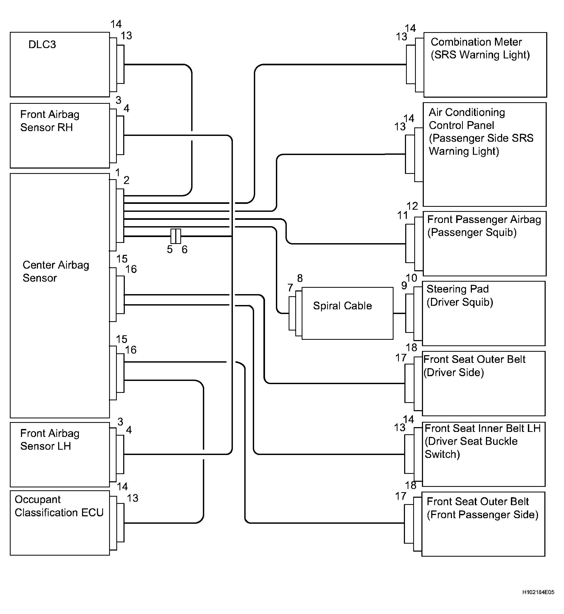
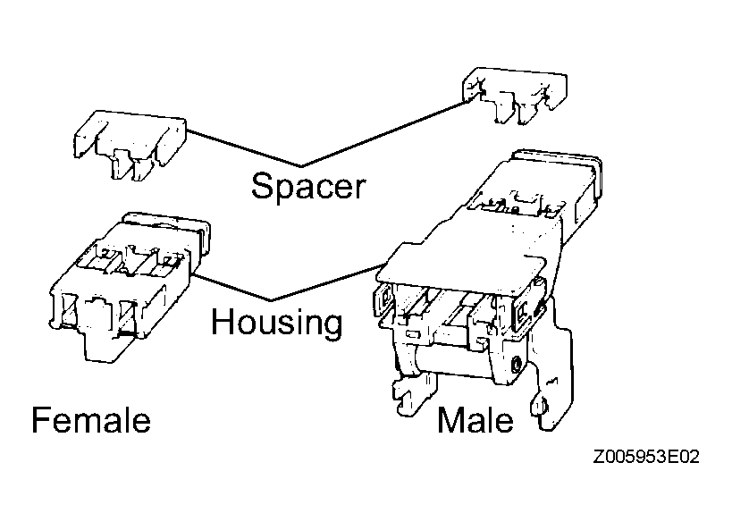
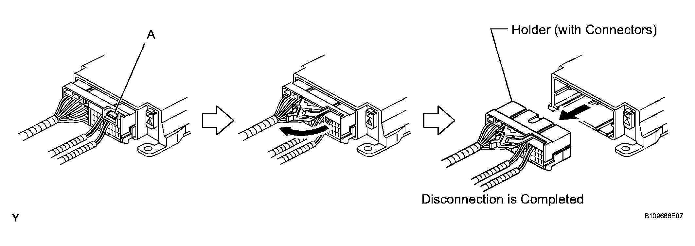
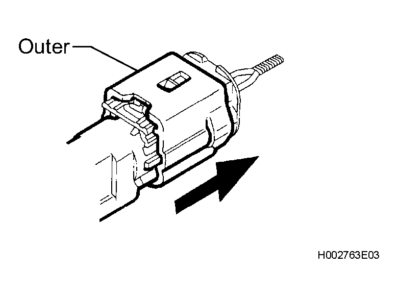

Precaution (2005/12- )
- The vehicle is equipped with a Supplemental Restraint System (SRS), which consists of a steering pad, front passenger airbag, seat belt pretensioner, center airbag sensor and front airbag sensors. Failure to carry out service procedures in the correct sequence could cause SRS parts to unexpectedly deploy and possibly lead to serious injuries. Furthermore, if a mistake is made when servicing SRS parts, they may fail to operate when required. Before performing servicing (including installation/removal, inspection and replacement of parts), be sure to read the following precautions.
- Before starting work, wait at least 90 seconds after the ignition switch is turned OFF and after the cable of the negative (-) battery terminal is disconnected. (SRS parts are equipped with a backup power source. If work is started within 90 seconds of turning the ignition switch OFF and disconnecting the cable from the negative (-) battery terminal, SRS parts may deploy.)
- Do not expose SRS parts directly to hot air or flames.
- Malfunction symptoms of SRS parts are difficult to confirm. DTCs are the most important source of information when troubleshooting. During troubleshooting, always confirm DTCs before disconnecting the cable from the negative (-) battery terminal.
- For minor collisions where SRS parts do not deploy, always inspect the SRS parts.
- Before repair work, remove airbag sensors as necessary if any kind of impact is likely to occur to an airbag sensor during the operation.
- Never use SRS parts from another vehicle. When replacing SRS parts, replace them with new ones.
- Never disassemble or attempt to repair SRS parts.
- If an SRS part has been dropped, or if there are any cracks, dents or other defects in the case, bracket or connector, replace the SRS part with a new one.
- Use an ohmmeter/voltmeter with high impedance (10 kΩ/V minimum) for troubleshooting the electrical circuits.
- Information labels are attached to the periphery of SRS parts. Follow the cautions and instructions on the labels.
- After work on the SRS is completed, perform the SRS warning light check (see DIAGNOSIS SYSTEM ).
- When the cable is disconnected from the negative (-) battery terminal, the memory settings of each system will be cleared. Because of this, be sure to write down the settings of each system before starting work. When work is finished, reset the settings of each system as before. Never use a backup power supply from outside the vehicle to avoid erasing the memory in a system.
- If the vehicle is equipped with a mobile communication system, refer to the precautions in the INTRODUCTION section (see PRECAUTION ).
- When disconnecting the cable from the negative (-) battery terminal, initialize the following system(s) after the cable is reconnected.
| System Name | See procedure |
|---|---|
| Meter / Gauge System | REPAIR INSTRUCTION |
- HANDLING PRECAUTIONS FOR AIRBAG SENSOR
HINT:
In this section, the center airbag sensor, front airbag sensor LH, and front airbag sensor RH are collectively referred to as the airbag sensors.
- Before replacement of the airbag sensor, wait at least 90 seconds after disconnecting the cable from the negative (-) battery terminal.
- When connecting or disconnecting an airbag sensor connector, ensure that all of the sensors are installed in the vehicle.
- Do not use the airbag sensors if they have been dropped.
- Do not disassemble the airbag sensors.
- INSPECTION PROCEDURE FOR VEHICLE INVOLVED IN ACCIDENT
- When the airbag has not deployed, confirm the DTC by checking the SRS warning light. If there is any malfunction in the SRS, perform troubleshooting.
- When any of the airbags have deployed, replace the related airbag sensor and inspect its normal operation.
- SRS CONNECTORS
HINT:
SRS connectors are located as shown in the following illustration.

Courtesy of © TOYOTA, LICENSE AGREEMENT TMS1002SRS CONNECTOR TYPE AND APPLICATIONConnector Type Application Terminal Twin-lock Mechanism Connectors 2, 4, 5, 6, 7, 16 Activation Prevention Mechanism Connectors 2, 8, 10, 12, 16 Half Connection Prevention Mechanism Connectors 4, 6, 7 Connector Lock Mechanism Connectors 9, 11, 17 - All connectors in the SRS are yellow (to distinguish them from other connectors). Some connectors have special functions and are specially designed for the SRS. These connectors use durable gold plated terminals, and are located as shown above to ensure high reliability.
- Terminal twin-lock mechanism:
Each connector has a two-piece component consisting of a housing and spacer. This design enables the terminal to be locked securely by 2 locking devices (the retainer and lance) to prevent terminals from becoming unseated.
- Activation prevention mechanism:
Each connector contains a short spring plate. When the connector is disconnected, the short spring plate automatically connects the positive (+) terminal and negative (-) terminal of the squib.

Courtesy of © TOYOTA, LICENSE AGREEMENT TMS1002 - Half connection prevention mechanism:
If the connector is not completely connected, the connector is disconnected by the spring.
- Connector lock mechanism:
Locking the connector lock button connects the connector securely.
- Terminal twin-lock mechanism:
- All connectors in the SRS are yellow (to distinguish them from other connectors). Some connectors have special functions and are specially designed for the SRS. These connectors use durable gold plated terminals, and are located as shown above to ensure high reliability.
- DEPLOYMENT CONDITION
- When the vehicle is in a collision and the shock is greater than the specified value, the SRS is activated automatically. The safing sensor and deceleration sensor are built into the center airbag sensor. The safing sensor is designed to be turned on at a smaller deceleration rate than the deceleration sensor. The deceleration sensor determines whether or not SRS deployment is necessary based on signals from the front airbag sensor. Current flows to the squibs to deploy the SRS when the conditions shown in the illustration below are met.
- DISCONNECTION OF CONNECTOR FOR STEERING PAD, FRONT PASSENGER AIRBAG, FRONT SEAT OUTER BELT WITH PRETENSIONER (DRIVER SIDE AND FRONT PASSENGER SIDE)
- Release the lock button (yellow part) of the connector using a screwdriver.
- Insert the screwdriver tip between the connector and base, and then raise the connector.
- CONNECTION OF CONNECTOR FOR STEERING PAD, FRONT PASSENGER AIRBAG, FRONT SEAT OUTER BELT WITH PRETENSIONER (DRIVER SIDE AND FRONT PASSENGER SIDE)
- Connect the connector.
- Push the lever in to connect the holder (with connectors). Check that it locks and that a "click" sound is heard.
- DISCONNECTION OF CONNECTOR FOR CENTER AIRBAG SENSOR
- Pull the lever by pushing the part labeled A and disconnect the holder (with connectors).

Courtesy of © TOYOTA, LICENSE AGREEMENT TMS1002HINT:
If replacement of the holder is necessary, proceed to the next step.
- Replace the holder.
- Using a screwdriver, unlock the retainer.
- Release the lance fittings and remove the holder.
- Install the connectors to a new holder. Check that they lock and that a "click" sound is heard.
- Lock the retainer.
- Pull the lever by pushing the part labeled A and disconnect the holder (with connectors).
- CONNECTION OF CONNECTOR FOR CENTER AIRBAG SENSOR
- Firmly insert the holder (with connectors) until it cannot be pushed any further.
HINT:
The holder slides when connected. Be sure not to hold the lever while connecting, as it may result in an insecure fit.
- Push the lever in to connect the holder (with connectors). Check that it locks and that a "click" sound is heard.
- Firmly insert the holder (with connectors) until it cannot be pushed any further.
- DISCONNECTION OF CONNECTOR FOR FRONT PASSENGER AIRBAG
- Place a finger on the slider.
- Slide the slider to release the lock.
- Disconnect the connector.
- CONNECTION OF CONNECTOR FOR FRONT PASSENGER AIRBAG
- Connect the connector as shown in the illustration. Check that it locks and that a "click" sound is heard.
HINT:
Do not touch the slider while it is moving.
- Connect the connector as shown in the illustration. Check that it locks and that a "click" sound is heard.
- DISCONNECTION OF CONNECTOR FOR FRONT AIRBAG SENSOR (LH AND RH)
- Hold the sides of the outer flank and slide it as shown in the illustration to release the connector lock.
- Disconnect the connector.
HINT:
Be sure to hold both outer flank sides. Holding the top and bottom will make disconnection difficult.

Courtesy of © TOYOTA, LICENSE AGREEMENT TMS1002
- CONNECTION OF CONNECTOR FOR FRONT AIRBAG SENSOR (LH AND RH)
- Connect the connector as shown in the illustration. Check that it locks and that a "click" sound is heard.
HINT:
Do not hold the outer flank while it is moving.
- Connect the connector as shown in the illustration. Check that it locks and that a "click" sound is heard.